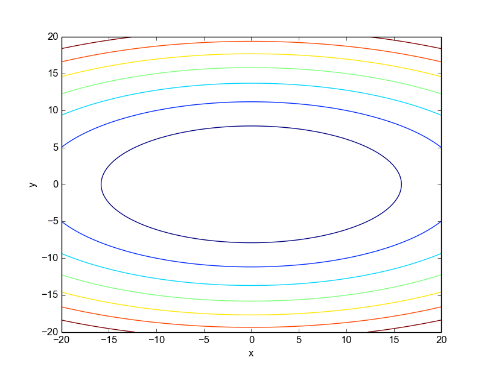

When plotting 3D graphs, a common source of confusion in Numpy and Matplotlib (and, by extension, I'd assume in Matlab as well) is how to reconcile between matrices that are indexed with rows and columns, and Cartesian coordinates.
Let's use the function as an example. Here's its 3D plot, courtesy of Google:
Now let's use Numpy and Matplotlib to make a contour plot of this function.
xx = linspace(-20, 20, 100)
yy = linspace(-20, 20, 100)
Z = zeros((len(xx), len(yy)))
for i in range(len(xx)):
for j in range(len(yy)):
Z[i, j] = 4*xx[i]**2 + yy[j]**2
If the creation of Z in the above looks fishy to you, you're right, and we'll get to it shortly. However, note that this is a vastly simplified demonstration - often Z is created behind the scenes by a more complex computation.
Finally, plotting the contour:
contour(xx, yy, Z)
xlabel('x'); ylabel('y')
We get:
This plot doesn't look right. In the function we're plotting, the contour lines should be stretched in the y direction, not the x direction (this is obvious both from the formula for z and from the 3D plot shown above). What's going on?
This is a simple demonstration of a very common problem many people run into when plotting a matrix as a 3D scalar field (a scalar value for each x, y coordinate). While we're used to thinking about x as the "first" coordinate and y as the "second", in the way Numpy represents matrices this is exactly the opposite. Here's a simple matrix:
array([[1, 2, 3],
[4, 5, 6],
[7, 8, 9]])
Imagine we'd like to plot it. Indexing into a matrix goes by [row, col], where row counts from top-to-bottom, and col counts from left-to-right. Now, if you just look at the matrix and visually interpose the Cartesian coordinate system on top, top-to-bottom is y and left-to-right is x. In other words, the indexing order is reversed.
Here's a visualization that should make it clear:
There's a very simple solution to this problem - use a transpose. Plotting:
contour(xx, yy, Z.T)
xlabel('x'); ylabel('y')
Gives us the expected:

A matrix transpose exchanges between rows and columns. It makes the original matrix's rows count from left-to-right and columns from top-to-bottom, matching the Cartesian coordinate system.
Is a transpose always required, then? Not at all. As I mentioned above, the computation of Z wasn't entirely correct, because matrix indices were conflated with Cartesian coordinates. In the double loop shown above it would be more correct to assign Z[j, i], and in general it's usually recommended to be explicit about row, col or x, y - as the i, j pair is somewhat ambiguous. That said, we don't always easily control the creation of Z, so the transpose is occasionally useful when the data we got is in the wrong order.
Meshgrids
IMHO, by trying to be helpful, the contour API helps spread the confusion. It does so by not enforcing x and y to be 2D data arrays, like all the 3D plotting routines do. It's better to be explicit and require a meshgrid.
So what is a meshgrid? meshgrid is a Numpy function that turns vectors such as xx and yy above into coordinate matrices. The idea is simple: when doing multi-dimensional operations (like 3D plotting), it's better to be very explicit about what maps to what. What we really want is three matrices: X, Y and Z, where Z[i, j] is the value of the function in question for X[i, j] and Y[i, j]. But more often than not, we don't have X and Y in this form. Rather, we just have vectors with their values running along the axes. This is what meshgrid is for. Here's a simple demonstration (taken from an IPython terminal):
In [218]: x = np.array([1, 2, 3])
In [219]: y = np.array([4, 5, 6])
In [220]: X, Y = meshgrid(x, y)
In [221]: X
Out[221]:
array([[1, 2, 3],
[1, 2, 3],
[1, 2, 3]])
In [222]: Y
Out[222]:
array([[4, 4, 4],
[5, 5, 5],
[6, 6, 6]])
The X and Y matrices may appear strange at first sight, but looking more closely reveals that they're exactly the coordinate matrices we need; in tandem, they run over all the 9 pairs needed to map from the original x and y vectors. The values in X increase from left to right; the values in Y increase from top to bottom - the way it should be.
And the best part about meshgrid is that it enables vectorized computations, just the way we like them in Numpy. So the function we originally created can now be computed and plotted correctly without any loops:
xx = linspace(-20, 20, 100)
yy = linspace(-20, 20, 100)
X, Y = meshgrid(xx, yy)
Z = 4*X**2 + Y**2
contour(X, Y, Z)
Produces the correct plot.
Finally, what about when we do get Z from somewhere else and it was computed using matrix indexing, rather than Cartesian indexing. Plotting its transpose is one alternative, but there's a better one. We can create a meshgrid, using its indexing keyword argument, like this:
X, Y = meshgrid(xx, yy, indexing='ij')
This tells meshgrid that we're going to plot a function computed using row, col, rather than x, y order, and it will flip the rows and columns accordingly.